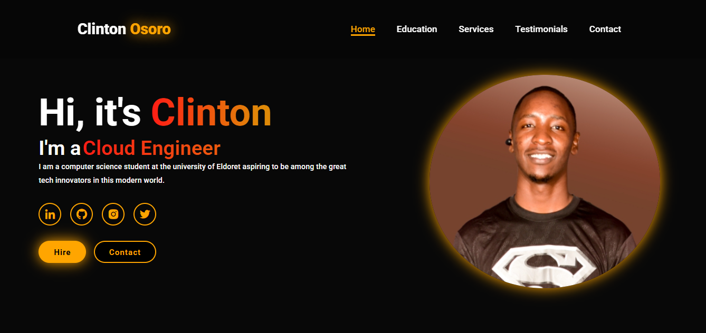

Personal Portfolio Website
A complete personal portfolio built to present my skills, certifications, contact channels, and project work through a polished responsive interface.
Outcome: Strengthens my professional brand with a clean, accessible, and conversion-focused online presence.
HTML
Tailwind CSS
Tailwind
JavaScript